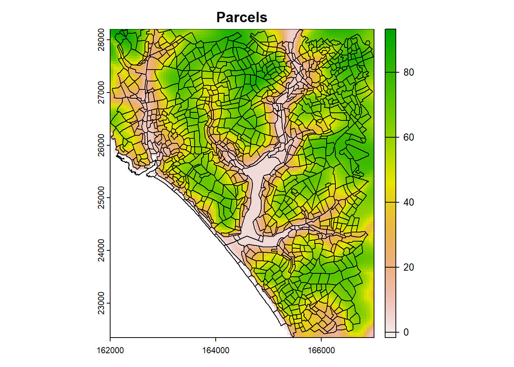

ADDTREES Workflow without bias correction
Source:vignettes/articles/mesoclim_addtrees.Rmd
mesoclim_addtrees.Rmd
library(lubridate)
#>
#> Attaching package: 'lubridate'
#> The following objects are masked from 'package:base':
#>
#> date, intersect, setdiff, union
library(terra)
#> terra 1.7.71
library(mesoclim)
#> Warning: replacing previous import 'lubridate::union' by 'raster::union' when
#> loading 'mesoclim'
#> Warning: replacing previous import 'lubridate::intersect' by
#> 'raster::intersect' when loading 'mesoclim'
#> Warning: replacing previous import 'magrittr::extract' by 'raster::extract'
#> when loading 'mesoclim'
#> Warning: replacing previous import 'lubridate::origin' by 'raster::origin' when
#> loading 'mesoclim'
#> Warning: replacing previous import 'fields::describe' by 'terra::describe' when
#> loading 'mesoclim'
#> Warning: replacing previous import 'magrittr::inset' by 'terra::inset' when
#> loading 'mesoclim'
# time whole process
tbegin<-now()Setup & Inputs
Downscaling requires the following files & directories:
Filepath to vector file of parcels output by ellicitor app.
Filepath to coastline boundary polygon (not necessary if dtm already masked)
Filepath to 50m DTM of UK (OS Terrain50 - which has advantages in having a .vrt raster that can be queried to enhance cropping and extraction of relevant area to match aoi etc. Subdirectories within hold actual tiled data.)
Directory holding UKCP18 RCM climate data files - holding raw .nc files (by variable and decade) as downloaded from ceda for the defined time period.
Directory holding UKCP18 derived sea surface temperature data files - holding .nc files as downloaded from ceda
Directory for outputs - to which individual parcel .csv timeseries files are written.
Additional parameters required:
Start time for climate timeseries.
End time for climate timeseries.
Model runs of UKCP18rcm to be downscaled
For this article, I am assuming you are using the shared folder
of mesoclim inputs. You should only have to change
dir_root to the directory in which the shared folder is
located for the rest of the setup to work…
For a quicker run time, reduce the time period as defined by
ftr_sdate and ftr_edate parameters. Other
parameters are chosen to work with the shared data folder.
# CHANGE this...
dir_root<-'D:'
# ... and these should be OK
parcels_file<-file.path(dir_root,'mesoclim_inputs','parcels','land_parcels.shp') # elicitor app output file
coast_file<-file.path(dir_root,'mesoclim_inputs','boundaries','CTRY_DEC_2023_UK_BGC.shp') # MHW line generalised to 20m
ukdtm_file<-file.path(dir_root,'mesoclim_inputs','dtm',"GBdem50.vrt") # 50m dtm virtual raster
dir_ukcp<-file.path(dir_root,'mesoclim_inputs/ukcp18rcm') # holds ukcp rcm climate and elevation data
dir_sst<-file.path(dir_root,'mesoclim_inputs/ukcp18sst') # ukcp18 derived data of sea surface temperature
dir_out<-file.path(dir_root,'mesoclim_inputs/outputs') # output dir
# Parameters chosen to work with this data
ftr_sdate<-as.POSIXlt('2020/01/01')
ftr_edate<-as.POSIXlt('2020/12/31') # If using shared data folder use max value of as.POSIXlt('2039/12/31')
modelrun<-c('06')
collection<-'land-rcm'
domain<-'uk'
rcp<-'rcp85'Download data
NOT required if working with the shared input data folder.
The functions will download from ceda archive the UKCP18 RCM data required, as defined by previously defined parameters.
Download UKCP18 regional climate data:
# UKCP18 RCM data
report<-download_ukcp18(
dir_ukcp,
ftr_sdate,ftr_edate,
collection, domain, rcp, member=modelrun,
vars=c('clt','hurs','pr','prsn','psl','rls','rss','tasmax','tasmin','uas','vas'),
download_dtm=TRUE, # will also download elevation data used in ukcp18 rcm model runs
cedausr=cedausr, cedapwd=cedapwd
)
print(report)Download UKCP18 driven sea surface temperature data:
# sst data
report<-download_ukcpsst(dir_sst,ftr_sdate,ftr_edate,modelrun)Prepare data
Prepare downscaling area and elevation data
Area of interest (aoi) for which downscaling will occur defined by bounding box around parcel data. This is then used to crop elevation data to generate dtms required for downscaling.
# Load dtm, boundary(coast)
dtm<-terra::rast(ukdtm_file) # 50m resolution dtm of all UK
coast_v<-terra::project(terra::vect(coast_file),dtm)
# Load parcels file and projectto crs of output dtmm (OS coords)
parcels_v<-terra::project(terra::vect(parcels_file),dtm)
# Generate local and wider extents (for aoi and coatal/wind effects)
aoi<-terra::vect(terra::ext(terra::project(parcels_v,terra::crs(dtm))))
terra::crs(aoi)<-terra::crs(dtm)
buffer_metres<-units::set_units(15000,'m')
aoi_buf<-terra::buffer(aoi,buffer_metres)
# Create local dtms - ensure they fall within extent of loaded dtm & mask to coast_v (sets sea to NA)
dtmf<-terra::mask(terra::crop(terra::crop(dtm,aoi),dtm),coast_v)
dtmm<-terra::mask(terra::crop(terra::crop(dtm,aoi_buf),dtm),coast_v)
dtmm<-terra::aggregate(dtmm,10)
# Show local aoi within wider dtm
plot(dtmm,main='AOI area within wider dtmm')
plot(aoi,add=TRUE)
# Coarse dtm matching ukcp18 inputs - crop to dtmm extent
dtmc<-terra::rast(file.path(dir_ukcp,"orog_land-rcm_uk_12km_osgb.nc"))
dtmc<-terra::crop(dtmc,dtmm)
# Plot dtmf and overlay parcels
plot(dtmf,main='Parcels')
plot(parcels_v,add=TRUE)
Prepare climate data
Future climate input files cropped and processed to a standard list of variables for the area of interest AND for each model run.
# Future
t0<-now()
ftr_ukcpdata<-ukcp18toclimarray(dir_ukcp, dtmc, ftr_sdate, ftr_edate,
collection, domain, modelrun)
#> Loading clt_rcp85_land-rcm_uk_12km_06_day_20101201-20201130.nc
#> Loading clt_rcp85_land-rcm_uk_12km_06_day_20201201-20301130.nc
#> Loading hurs_rcp85_land-rcm_uk_12km_06_day_20101201-20201130.nc
#> Loading hurs_rcp85_land-rcm_uk_12km_06_day_20201201-20301130.nc
#> Loading pr_rcp85_land-rcm_uk_12km_06_day_20101201-20201130.nc
#> Loading pr_rcp85_land-rcm_uk_12km_06_day_20201201-20301130.nc
#> Loading psl_rcp85_land-rcm_uk_12km_06_day_20101201-20201130.nc
#> Loading psl_rcp85_land-rcm_uk_12km_06_day_20201201-20301130.nc
#> Loading rls_rcp85_land-rcm_uk_12km_06_day_20101201-20201130.nc
#> Loading rls_rcp85_land-rcm_uk_12km_06_day_20201201-20301130.nc
#> Loading rss_rcp85_land-rcm_uk_12km_06_day_20101201-20201130.nc
#> Loading rss_rcp85_land-rcm_uk_12km_06_day_20201201-20301130.nc
#> Loading tasmax_rcp85_land-rcm_uk_12km_06_day_20101201-20201130.nc
#> Loading tasmax_rcp85_land-rcm_uk_12km_06_day_20201201-20301130.nc
#> Loading tasmin_rcp85_land-rcm_uk_12km_06_day_20101201-20201130.nc
#> Loading tasmin_rcp85_land-rcm_uk_12km_06_day_20201201-20301130.nc
#> Loading uas_rcp85_land-rcm_uk_12km_06_day_20101201-20201130.nc
#> Loading uas_rcp85_land-rcm_uk_12km_06_day_20201201-20301130.nc
#> Loading vas_rcp85_land-rcm_uk_12km_06_day_20101201-20201130.nc
#> Loading vas_rcp85_land-rcm_uk_12km_06_day_20201201-20301130.nc
#> Using constant land and sea albedo values - assuming NA values in dtmc are sea!!
prep_time= now()-t0
# write_climdata(ftr_ukcpdata,file.path(dir_out,'ftr_ukcpdata.Rds'))Time for climate data preparation = 51.04 minutes.
Prepare Sea surface data
Sea surface temperatures are also loaded and cropped to dtmm extent.
# Sea surface temperature
sst<-create_ukcpsst_data(dir_sst,ftr_sdate,ftr_edate,dtmm,modelrun)Checking data inputs
The resulting data structures of pre-processing can be checked to ensure there are no missing or unexpected values that may indicate a difference in the expected SI units or incomplete input datasets. This is particularly advisable if the inputs for spatial downscaling are not derived from one of the provided functions.
The checkinputs function also provides basic statistics
and sample plots of climate variables.
ftr_ukcpdata<-checkinputs(ftr_ukcpdata, tstep = "day")
#> [1] "Weather observations = 366"
#> [1] "Timesteps= 24 hrs, max= 24 hrs, min= 24 hrs"
#> [1] "Observations over 1 years, or 11.97 months, or 365 days."
#> Min. Mean Max.
#> cloud 0.000 76.304 100.000
#> relhum 50.332 79.018 99.072
#> prec 0.000 3.623 49.348
#> pres 96.706 101.561 104.084
#> lwrad 210.185 314.024 376.087
#> swrad 2.822 132.751 348.986
#> tmax 2.886 14.011 27.069
#> tmin -2.980 10.066 19.730
#> windspeed 0.017 4.921 19.266
#> winddir 0.510 159.920 358.930
#> elevation 25.748 42.511 58.514
#> [1] "Plotting spatial variation by month: red=max, green=mean, blue=min"#> [1] "Plotting wind direction figures"Downscale ukcp18 climate data to 50m
# Future - takes about 20mins using shared folder inputs
t0<-now()
ftr_mesoclim<-spatialdownscale(ftr_ukcpdata, sst, dtmf, dtmm,
basins = NA, cad = TRUE, coastal = TRUE,
thgto = 2, whgto = 2, rhmin = 20,
pksealevel = TRUE, patchsim = FALSE,
terrainshade = FALSE, precipmethod = "Elev",
fast = TRUE, noraincut = 0.01)
#> Downscaling wind...
#> Downscaling temperature...
#> Downscaling relative humidity
#> Downscaling pressure...
#> Downscaling SW radiation...
#> Downscaling LW radiation with terrain shading...
#> Downscaling precipitation...
#> Formatting output...
dscale_time<-now()-t0Time taken for downscaling function = 1.39 minutes.
Display downscaled outputs
Min, max and mean values in tabular form for all times and locations:
climvars<-c('tmin','tmax','relhum','pres','swrad','lwrad','windspeed','winddir','prec')
smry_fun<-function(x) summary(as.vector(as.array(x)))
rslt<-sapply(ftr_mesoclim[climvars],smry_fun)
stats_df<-as.data.frame(t(round(rslt,3)))[,c('Min.','Mean','Max.')]
print(stats_df)
#> Min. Mean Max.
#> tmin -3.306 9.778 19.186
#> tmax 3.061 13.988 27.318
#> relhum 43.596 79.541 100.000
#> pres 95.704 100.987 104.092
#> swrad 3.550 130.987 337.042
#> lwrad 208.372 313.303 374.757
#> windspeed 0.034 2.680 13.979
#> winddir 0.033 159.813 359.992
#> prec 0.000 3.787 44.702Or as raster plots for days corresponding to spatial quantiles (ie days where spatial means are data min, median and max values of timeseries). Example plots of max and min daily temperatures, precipitation and dirunal temperature range:
for(var in c('tmax','tmin','prec')){
r<-ftr_mesoclim[[var]]
names(r)<-rep(var,nlyr(r))
plot_q_layers(r,vtext=var)
}
# Show spatial range in daily temperatures
diurnaltmp<-ftr_mesoclim$tmax-ftr_mesoclim$tmin
plot_q_layers(diurnaltmp,vtext='diurnalT')Or as plots of timeseries of spatial statistics (min, max and mean), for example by day of year (averaged over all years):
par(mar=c(1,1,1,1),cex.main=0.8, mgp=c(3,0.1,0))
layout(matrix(c(1,2,3,4,1,5,6,7,1,8,9,10),ncol=3),heights=c(1,3,3,3))
plot.new()
text(0.5,0.5,"Spatial mean (green), max (red) and min (blue) by day of year",cex=1,font=1)
for(v in climvars){
r<-unwrap(ftr_mesoclim[[v]])
plot_timestats_r(r,v,idx='doy',lgd=FALSE)
}Calculate and write parcel outputs
Calculate weighted means of climate variables for each parcel and write as .csv files.
# Calculate parcel values
t0<-now()
parcel_list<-create_parcel_list(ftr_mesoclim,parcels_v,id='gid')
#> [1] "tmax"
#> [1] "tmin"
#> [1] "swrad"
#> [1] "lwrad"
#> [1] "relhum"
#> [1] "pres"
#> [1] "prec"
#> [1] "windspeed"
# Write parcel files
write_parcels(parcel_list, dir_out, overwrite='replace')
parcel_time<-now()-t0
total_time<-now()-tbeginTime for parcel calculation and writing = 4.38 minutes.
Total time taken for code execution = 7.02 minutes.